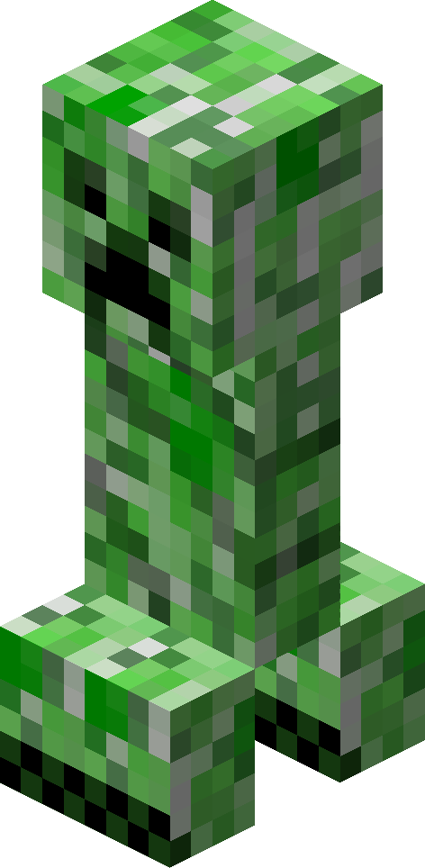

Creepers are common mobs in Minecraft, however, they are a bit rarer than zombies and skeletons.
StatsCreepers have 20 HP, just like the player, skeleton, and zombie.
A Creeper's attack is unlike any mob in the game. It will attempt to go close to the player, and explode.
The damage of the explosion varies in damage depending on one's proximity to the explosion.
When adjacent to the explosion, the explosion deals a whopping 25 damage on easy, 49 on normal, and 73 on hard
This is more than enough to one hit an unarmored player.
BehaviourCreepers will spawns in groups of 1, only when it is dark just like the Skeleton and Zombie.
Like skeletons, they have a pursuing distance of 16 blocks.
Once within 3 blocks of the player, the creeper will expand, flash white, and produce a hissing sound.
About 1.5 seconds later, it will self destruct, exploding and damaging all nearby entities.
If a creeper is right clicked on by the player with a flint and steel, it will stop and explode (with the same 1.5 second delay)
Creepers also become charged when struck by lightning, making it's explosion significantly bigger.
